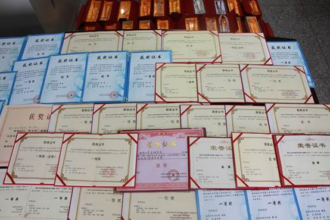

近期学生获奖情况一览
信息科学与工程学院学风优良，学生学习认真刻苦，学习氛围浓郁。且学院注重学生德智体的全面培养，注重学生综合素质的提高，鼓励、引导、辅导学生积极参加各类文体竞赛，重点打造机器人竞赛平台，每年都能够涌现出一批德才兼备的学生。他们在各种舞台上积极展现自己，为自己赢得了荣誉，提高了学院的美誉度。
一 学生获得奖学金情况
| 奖学金名称 | 获奖人数 | 合计比例 |
国家奖学金 |
1人 |
总计获奖比例为在校生人数的46% |
香江奖学金 |
1人 |
|
赵世良奖学金 |
2人 |
|
国家励志奖学金 |
42人 |
|
金陵学院一等奖学金 |
48人 |
|
金陵学院二等奖学金 |
128人 |
|
金陵学院三等奖学金 |
250人 |
|
金陵学院单项奖 |
320人 |
二 学生获得个人荣誉情况
| 所获荣誉 | 获奖人数 | 合计比例 |
南京大学优秀共产党员 |
1人 |
占学生总数10.1% |
江苏省三好学生 |
1人 |
|
江苏省优秀学生干部 |
1人 |
|
南京大学优秀团干 |
2人 |
|
南京大学优秀团员 |
8人 |
|
金陵学院优秀学生标兵 |
2人 |
|
金陵学院优秀学生干部标兵 |
2人 |
|
金陵学院优秀学生干部 |
11人 |
|
金陵学院优秀学生 |
60人 |
|
金陵学院优秀团员 |
85人 |
三 学生参加全国机器人大赛获奖情况
机器人大赛为国家级竞赛，是信息科学与工程学院重点打造的软件、自动控制、通信等多学科交叉融合平台。通过多年的发展，金陵学院信息科学与工程学院在全国机器人大赛上有了相当的知名度。在2013年合肥举行的机器人大赛中，我院代表队力克北大、清华等众多985、211高校，荣获三项冠军。

历年机器人竞赛获奖证书
1、第九届全国信息技术应用水平大赛 暨 2014 “创佳彩电杯” 国际水中机器人大赛（ 2014年5月24-25日，广东，潮州）
第九届全国信息技术应用水平大赛：
2D仿真花样游泳 一等奖
队员：张威、王荣琴
全局视觉水球 2vs2 二等奖
队员：邹伟诚、陆一歌、晏宜曦
全局视觉水中救援 二等奖
队员：邹伟诚、陆一歌、晏宜曦
全局视觉抢球博弈 三等奖
队员：邹伟诚、陆一歌、晏宜曦
全局视觉水中角力 三等奖
队员：邹伟诚、陆一歌、晏宜曦
2014 “创佳彩电杯” 国际水中机器人大赛：
2D仿真协作过孔 亚军
队员：张威、杨威、赵俊豪、张天阳
2D仿真水球斯诺克 季军
队员：张威、张天阳、赵俊豪
2、2013 中国机器人大赛暨RoboCup 公开赛（2013年10月18日－20日，安徽，合肥）
武术擂台仿人标准2V2 冠军
队员：武海健、孙琴、黄香
全局视觉水中角力 冠军
队员：周伟诚
2D仿真花样游泳 冠军
队员：王蓉琴、张威、陈林奇、杨威
全局视觉愤怒的小鱼 亚军
队员：周伟诚
2D仿真抢球大作战 季军
队员：陈林奇、赵俊豪、杨威、徐天磊
2D仿真协作过孔 一等奖
队员：张威、陈林奇、杨威、张天阳、王蓉琴
2D仿真水球斯诺克 一等奖
队员：张威、张天阳、赵俊豪、徐天磊
2D仿真水球5V5 一等奖
队员：徐天磊、赵俊豪、张天阳、王蓉琴
武术擂台自主命题技术挑战 二等奖
队员：诸昊罡、许腾、宋雅文、陈体壮
武术擂台无差别标准1V1 二等奖
队员：张凯、夏添
武术擂台规定动作技术挑战 二等奖
队员：诸昊罡、盛洲、吴雨亮
武术擂台仿人标准1V1 二等奖
队员：孙琴、武海健、张凯
全局视觉水球1V1 二等奖
队员：曾布和、贺琪、陈峰
全局视觉抢球大作战 二等奖
队员：曾布和、贺琪、陈峰
3、2013宁波国际水中机器人大赛-暨第五届水中机器人技术研讨会（2013 年5 月25—27 日，浙江 宁波）
2D仿真协作过孔 亚军
队员：稽飞、曹长福、朱玉豆
2D仿真水球（5:5） 季军
队员：邵明浩、臧启蒙、稽飞
全局视觉水中角力 一等奖
队员：周伟诚、孙琴、武海健、诸昊罡、朱茜、陈体壮
2D仿真花样游泳 二等奖
队员：朱玉豆、稽飞、臧启蒙
2D仿真水球斯诺克 二等奖
队员：臧启蒙、邵明浩、朱宸豪
全局视觉抢球大作战 二等奖
队员：陈峰、贺琪、曾布和
2D仿真抢球大作战 三等奖
队员：邵明浩、朱宸豪、曹长福
全局视觉水球（1：1） 三等奖
队员：陈峰、贺琪、曾布和
全局视觉愤怒的小鱼 三等奖
队员：周伟诚、孙琴、武海健、诸昊罡、朱茜、陈体壮
| 年份 | 冠军 | 亚军 | 季军 | 一等奖 | 二等奖 | 三等奖 |
2009 |
0 |
0 |
0 |
4 |
1 |
2 |
2010 |
2 |
5 |
3 |
2 |
5 |
3 |
2011 |
4 |
3 |
3 |
3 |
10 |
4 |
2012 |
1 |
2 |
3 |
2 |
9 |
7 |
2013 |
3 |
2 |
2 |
4 |
9 |
3 |
总计 |
10 |
12 |
11 |
15 |
34 |
19 |
四 2013年学生参加科研项目及获奖情况
| 科研项目 | 项目名称 | 参与学生 |
江苏省优秀毕业论文 |
光声成像系统数值模拟研究 |
温馨 |
团队优秀毕业设计 |
智能门禁群控系统 |
付光健，李丕峰，朱光亚 |
江苏省高等学校大学生实践创新训练计划年立项项目 |
基于大学生社交活动及管理的信息平台设计 |
王汉浦、傅青、苗璐、高志超 |
江苏省高等学校大学生实践创新训练计划年立项项目 |
基于ZigBee的病人体温采集系统的开发与设计 |
孙辉、王斌 |
江苏省高等学校大学生实践创新训练计划年立项项目 |
基于8051的数字基带传输系统设计 |
张凯、文乐、 肖尧、袁炅 |
江苏省高等学校大学生实践创新训练计划年立项项目 |
基于CPG模型的仿生机器鱼运动控制研究 |
武海健、孙琴 |
江苏省高等学校大学生实践创新训练计划年立项项目 |
基于ARM9及多传感器的移动机器人定位技术研究 |
朱茜、诸昊罡 |
江苏省高等学校大学生实践创新训练计划年立项项目 |
室外箱式变电站温湿度控制器 |
高月梅、冯洁、杜瑜瑜 |